|
Dado un triangulo ABC y una cónica, sea A'B'C' el triangulo polar de ABC con respecto a la cónica. Demostrar que ABC y A'B'C' estan en perspectiva. |
|
Paul Yiu. Introduction
to the Geometry of the Triangle, version 2.0402, Summer 2001. Propuesto
por José Carlos Chávez Sandoval.
|
|
En coordenadas baricéntricas una cónica se expresa como una ecuación polinómica de segundo grado
a la que podemos asociar una matriz simétrica:
La recta polar de un punto P=(u : v : w) puede hallarse mediante el producto de matrices MPt. |
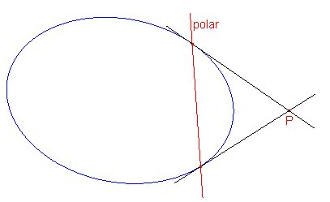 |
Triángulo polar de una cónica respecto de un triángulo
Dado un triángulo ABC y una cónica G, se llama triángulo polar de la cónica respecto de ABC al triángulo formado por las polares de los vértices A, B, C respecto de la cónica G.
Lo que tenemos que demostrar es un resultado atribuido a John Conway por Paul Yiu.
Teorema (Conway). Sea A'B'C' el triángulo formado por las polares respecto de una cónica de los vértices del triángulo ABC. Entonces ABC y A'B'C' son perspectivos.
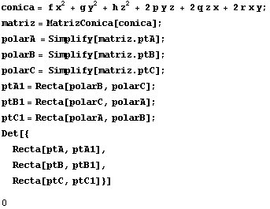
Si calculamos el centro de perspectiva de los dos triángulos
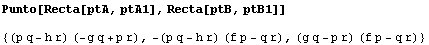
vemos que se trata del punto
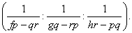
A este punto se le llama centro de perspectiva de la cónica respecto del triángulo ABC.
Observación: Puede observarse que este punto no coincide exactamente con el punto (p:q:r) dado por Paul Yiu. Ello es porque Paul Yiu supone implícitamente que la cónica es inscrita o circunscrita al triángulo ABC, que es lo más usual.
Casos particulares
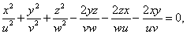
de donde podemos deducir que su centro de perspectiva respecto del triángulo ABC también es (p:q:r):
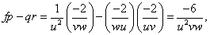
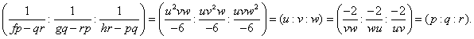
| Ejemplos | ||
| En estas figuras vemos varios ejemplos de cónicas relacionadas con un triángulo, su triángulo polar y su centro de perspectiva. | ||
|
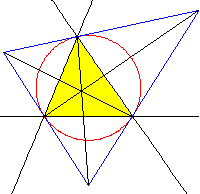 |
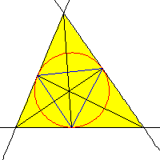 |
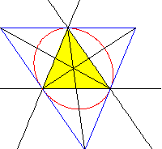 |
| Cónica: Circunferencia circunscrita | Cónica: Circunferencia inscrita | Cónica: Circunelipse de Steiner |
| Centro de perspectiva: Punto simediano | Centro de perspectiva: Punto de Gergonne | Centro de perspectiva: Baricentro |
|
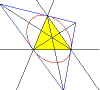 |
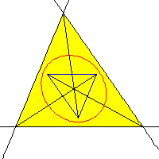 |
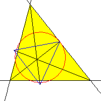 |
|
Cónica: Circunelipse de Macbeath |
Cónica: Elipse de los baricentros | Cónica. Circunferencia de los 9 puntos |
| Centro de perspectiva: Circuncentro | Centro de perspectiva: Baricentro | Centro de perspectiva: ??? (*) |
(*) En el último ejemplo el centro de perspectiva tiene coordenadas baricéntricas
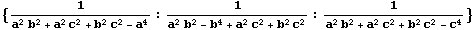
no se encuentra en la ETC y su coordenada de búsqueda es -5.990491370...